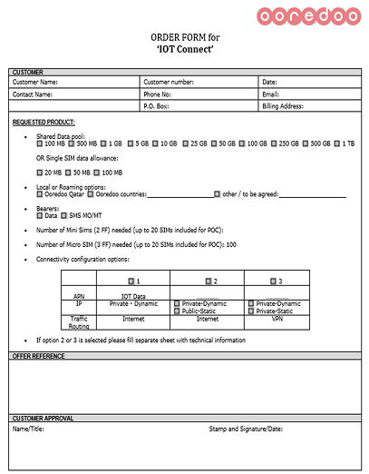
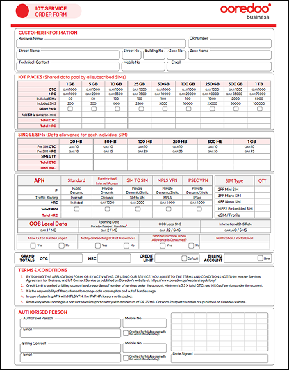
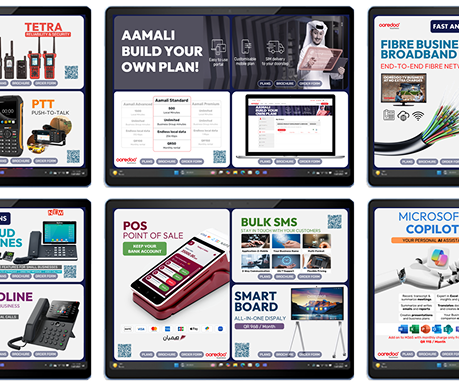
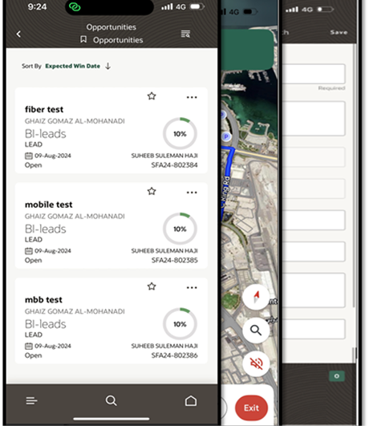
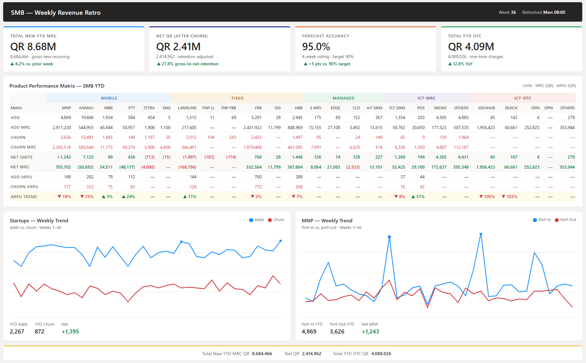

Sales Enablement Infrastructure
The SMB Sales Operation at Ooredoo Qatar is served by 100+ indirect channel partner agents, multiple retail
outlets
across the country, and several digital channels.
Built the underlying enablement infrastructure that made the B2B Sales Academy stick — the rails sellers and partners actually run on every day. Standardized order forms with digital signing, interactive in-store and field catalogs, a centralized sales CMS, a connected-tablet field stack with mobile CRM/SFA, and an executive revenue-intelligence suite. Collateral, customer context, and performance data all lived in the seller workflow instead of scattered drives.
+18
NPS Point Improvement
84%
CSAT Score
9→3
Days Order-to-Activation
+5%
Revenue per Account
Digitization & Cycle Time Reduction: Partnered with Product, Operations, and
Marketing UX/UI teams to redesign and standardize all order forms into clean, fillable PDF documents.
Centralized them in the sales repository for online completion, download, or direct sharing with
customers. Established a digital signing workflow enabling authorized customer signatories to execute
orders remotely — compressing the order-to-cash cycle from 48 hours to under one hour.

→

In-Store & Field Engagement Enablement: Designed an interactive product and
services catalog tailored for both shop and field environments. Deployed it on interactive screens
across all retail locations for self-serve customer browsing, and equipped field sales representatives
with the same catalog for guided conversations. Integrated promotional messaging into the queue
management system so customers received relevant content while waiting.

Building the Sales CMS: Sourced, configured, and deployed a centralized
Sales Content Management platform as the single source of truth for all sales
collateral — customer presentations, product specs, pricing sheets, promotions, battlecards,
training materials, and order forms. Architected the taxonomy and permissions model so sellers, channel
partners, and retail staff each saw the right content in-workflow. Stood up a
governance process with Base Management and Product Managers for continuous review and
version control, and drove organization-wide adoption through structured onboarding. The CMS became the
backbone that every other enablement surface — academy, field tablet, partner portal —
pulled from.

Mobile CRM & Field Sales Empowerment: Enabled and customized the mobile module
of the company's Oracle SFA platform, giving the team full lead management capability on the go.
Integrated it with the CRM to surface customer contacts, active services, and account history —
enabling informed conversations and on-the-spot appointment scheduling. Extended the module to allow
reps to feed market intelligence back into the CRM, including competitor services, new contacts, and
updated account details.

Revenue Intelligence & Executive Reporting: Engineered automated data pipelines
with CRM and Billing developers, consolidating sales performance data by agent, zone, and product
alongside churn and number portability metrics. Built an ETL layer using SQL and Power Query, then
developed an interactive reporting suite in Excel and Power BI to surface trends and performance
stories clearly. Designed a monthly Revenue Intelligence Pack for C-suite consumption, consolidating
KPIs across revenue, churn, NPS, workforce utilization, and pipeline into a single, visually consistent
deck. Eliminated 40 hours per month of manual report preparation and established a single source of
truth for strategic decision-making.
